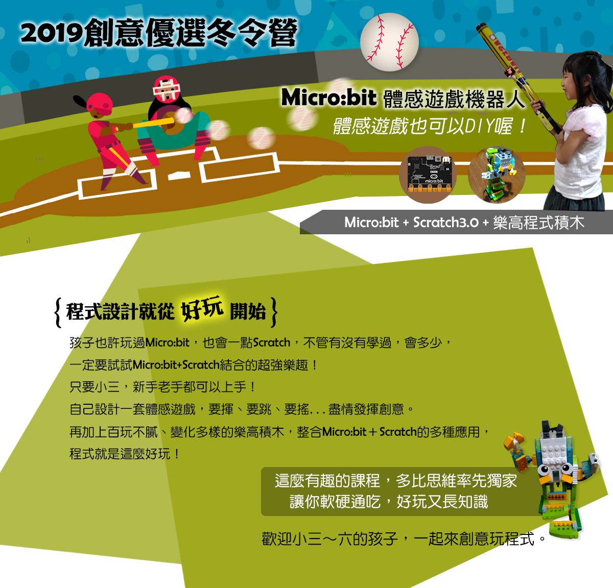

【2019冬令營】Micro:bit體感遊戲機器人 小三~小六

| 日期 | 第一天(1/28) | 第二天(1/29) | 第三天(1/30) | 第四天(1/31) | 第五天(2/1) |
|---|---|---|---|---|---|
| 時間 1:30 ~ 4:30 |
[Micro:bit操作環境基本元件介紹] 介紹及使用25 個可程式化 LED、2 個可程式化按鈕、介紹電路連接 pin 腳、光 和 溫度 感測器、動作感測器(加速儀和羅盤)和無線通訊藍牙 |
[Micro:bit體感遊戲DIY：龜兔賽跑] 你一定聽過龜兔賽跑的故事。烏龜嬴？兔子嬴？用Scratch結合Micro:bit，讓你選擇要扮演兔子還是烏龜，一起來參與這場比賽吧！ |
[Micro:bit體感遊戲DIY：肚子餓的怪獸] 怪獸肚子餓了！動一動、跳一跳，扮演怪獸幫他抓幾隻天上飛的小鳥填肚子吧，用Scratch結合Micro:bit，來製作一個怪獸跳躍抓物遊戲。 |
[Micro:bit操控樂高機器人：雙腳行走機器人] 用Wedo(樂高)搭建一個機器人模型，透過Scratch連結Micro:bit，操控機器人，讓它的雙腳可以像人一樣行走。 |
[Micro:bit操控樂高機器人：雙旋翼戰鬥機] 用Wedo(樂高)搭建一台戰鬥機模型，透過Scratch連結Micro:bit，操控戰鬥機，可調整旋翼速度，想像戰鬥機飛翔空中。 |